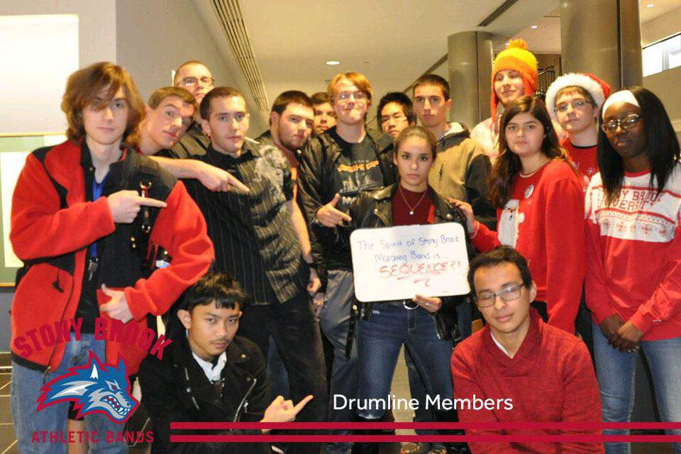
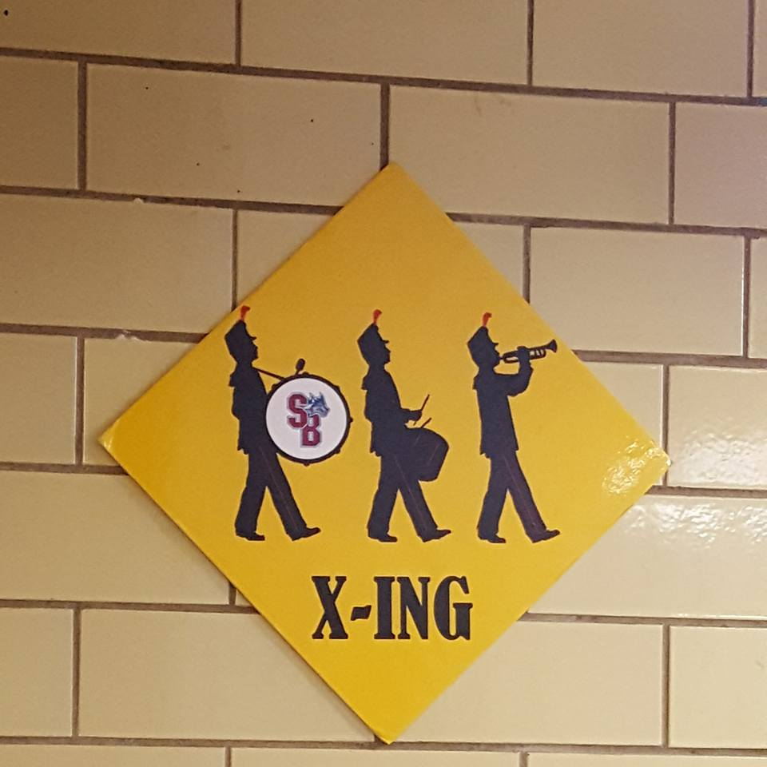
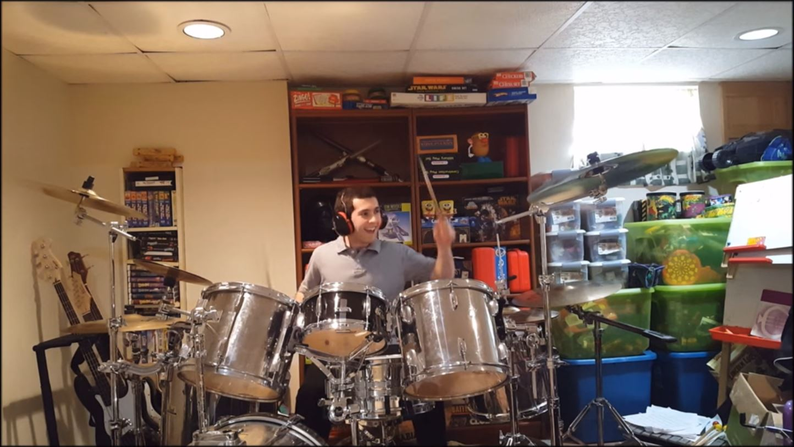

About Me: Read and enjoy! I hope I'm not too boring!
 I hail from a small town in Bergen County, the most north-eastern county in New Jersey, whose name is Park Ridge (Go Owls!!). Pretty much everyone knew each other here, hence one of the reasons I decided to come to Stony Brook University: I started my Fall 2016 semester knowing only one person (the only other person from my town who attends Stony Brook University as of the Fall 2017 Semester), and thanks to the SBU Marching Band, I've developed a phenomenal network of friends (mainly members in the drum-line and computer science communities). They've seen me at my best and my worst, and I'm happy to have them at my back.
My interest in the fields of Computer Science and Mathematics started relatively late compared to my current position in my college career. Before choosing Computer Science as my desired field, I was heavily invested in music. I've been playing the drums since 2007; it's my way of expressing myself. No matter what, there's always time time to drum. In my junior year of high school, I took an introductory CS class on a whim, learning concepts through Visual Basic and I thought (and think) that this was (is) the best thing since sliced bread. To make a long story short, that's how I arrived at my decision to major in Computer Science. Drums are very relevant in my life, be it marching percussion, or applications of multiple genres on a drum kit.
Outside of academia and drumming, I practice Tae-Kwon-Do, a korean martial art. Since I started in 2004, I have kept a steady pace towards bettering myself in the art. It's changed for me over the years, starting out as something that looked cool while watching television to a way to better myself as a person, teach me discipline, etc. Through this way of thinking and acting, I have progressed to a 4th degree black belt (the rank of "Master"), and at this rank, I have gained enough knowledge to be able to teach other students the theory and concepts of Tae-Kwon-Do, which I do when I'm at home for a break or for the summer. It's teachings are really applicable to many other aspects of life, which is pretty cool as well.